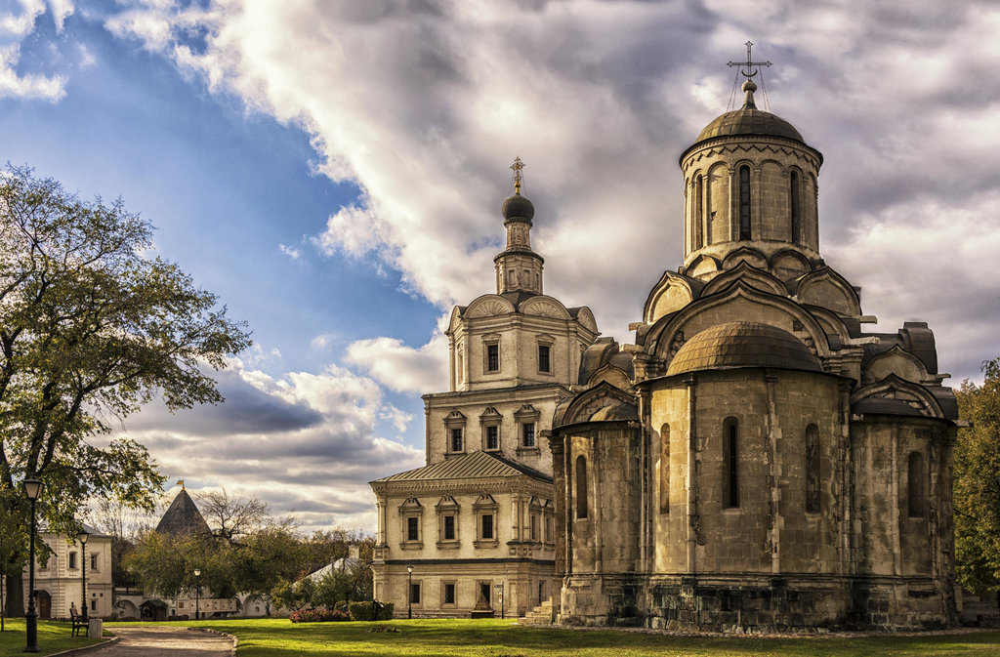

Спасо-Андроников монастырь
Спасо-Андроников монастырь, что на берегу Яузы на границе Таганского района – интереснейшая столичная древность. На его территории находится самый внушительный из сохранившихся памятников раннемосковского зодчества – спасский собор, датируемый первой третью XV столетия. Расписывал Спасский собор Андрей Рублёв.
Предание относит основание Спасо-Андроникова монастыря к 1350-м годам и связывает его с именем московского митрополита Алексея. Возвращаясь из Константинополя, где он был поставлен в московские митрополиты константинопольским патриархом, Алексий вез с собой византийскую икону Спаса Нерукотворного. На Черном море корабль митрополита попал в сильную бурю. Обращая свои молитвы об избавлении от гибели к иконе Спаса Нерукотворного, митрополит дал обещание в случае успешного завершения путешествия построить в честь этого образа монастырь. Первым игуменом нового монастыря стал ученик Сергия Радонежского, инок Троице-Сергиева монастыря Андроник, в честь которого монастырь и получил позднее название Спасо-Андроникова.
Монастырь был поставлен к юго-востоку от Кремля, на высоком берегу реки Яузы, у впадения в нее небольшого ручья, который в память о Константинопольской бухте Золотой рог получил название «Золотой рожок». Это место, тогда еще не входившее в территорию Москвы, лежало на перепутье двух оживленных дорог. Одна вела на восток во Владимир и Нижний Новгород, другая на юг в Коломну, Рязань и дальше в Золотую орду, откуда грозила потенциальная опасность. Поэтому монастырь был здесь поставлен как сторожевой, который в случае неприятельского набега мог выполнять функции одного из наблюдательных пунктов.
В 1380 году Спасо-Андроников монастырь встречал войско Дмитрия Донского, возвращавшегося с победой после битвы на Куликовом поле. Здесь, по преданию, были захоронены павшие в сражении русские воины.
Между 1410 и 1427 годами, при игумене Александре, в монастыре возводится первое каменное здание – Спасский собор, роспись которого принадлежала старцу Андроникова монастыря, великому иконописцу Андрею Рублеву. После постройки каменного собора статус Спасо-Андроникова монастыря возрос: он получил архимандрию. В начале XVI в. архимандритом монастыря становится духовник великого князя Ивана III Митрофан, при котором между 1504 по 1506 гг. была выстроена на средства великого князя одностолпная кирпичная трапезная палата. Она имела два этажа и была украшена терракотовыми израцами. Во второй половине XVI в. возводятся деревянные Святые ворота(главный вход в монастырь), в XVII веке замененные каменными. Над ними позже была построена церковь Рождества Богородицы.
В XVI в. Спасо-Андроников монастырь оказывается включенным в бурную политическую и духовную жизнь. В нем был поселен новгородский епископ Серапион, конфликтовавший с Иосифом Волоцким. Здесь пребывал уличенный в ереси игумен Троице-Сергиева монастыря Артемий. В 1571 г. монастырь был разорен Девлет-Гиреем. В 1653 г. монастырь стал местом временного заточения вождя старообрядцев протопопа Аввакума перед отсылкой его в Сибирь. Во второй половине XVII в. в монастыре возводится наконец, каменная ограда. В северо-западном углу располагалась не дошедшая до наших дней столпообразная шатровая колокольня с «русскими часами». Затем строятся настоятельские покои, неоднократно затем перестраивавшиеся. В конце XVII в. заботу о монастыре берет на себя Евдокия Лопухина, супруга Петра I. В 1691 г. ее иждивением закладывается церковь Архангела Михаила, однако строительство заканчивается только в 1739 г. В начале XVIII в. начали возводить каменный Братский корпус. В 90-х годах XVIII в. перед святыми воротами возводится огромная колокольня, заказчиком которой был купец первой гильдии, С.П. Васильев, а архитектором Родион Родионович Казаков. В 1810-1814 гг. строится здание церковного училища.
Со времен Дмитрия Донского и вплоть до начала XX века на территории монастыря хоронили достойнейших людей. Разоренному, но сохранившему отдельные надгробия некрополю монастыря в музее посвящена отдельная экспозиция под открытым небом.
Накопленные в Спасо-Андрониковом монастыре за шесть веков его существования иконы, шитые пелены, литургические сосуды, облачения, книги и кресты после Октябрьской революции были разграблены или уничтожены. В основанный на территории монастыря в 1947 г. музей им. Андрея Рублева вернулась лишь шитая палица 1438/9 г., вклад Ульяны Васильевны, супруги серпуховского князя Владимира Храброго, и одна из пяти дошедших до наших дней древних монастырских рукописей – «Слова Постнические Василия Великого», датируемая 1402-1406 гг. Не сохранились колокольня Андроникова монастыря, ц. Рождества Богоматери со Святыми воротами, часть башен и монастырских стен, охватывавших гораздо большую площадь, чем современная территория Музея имени Андрея Рублева.